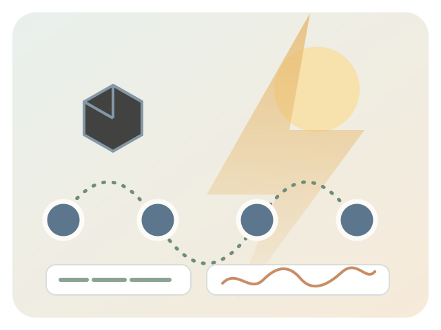
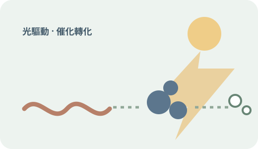
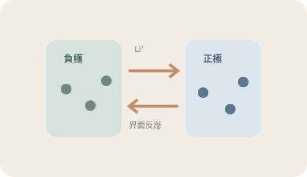
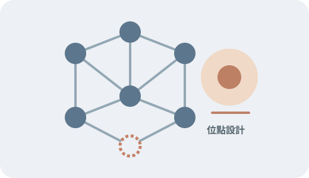

2026-11-06 · 光催化與塑膠資源化約 10 分鐘
硫空缺 CdS 光催化 PLA 廢塑膠製丙胺酸
解析室溫合成的缺陷 CdS 如何在氨水與可見光下將 PLA 轉為丙胺酸，並說明硫空缺的最佳化效應、反應路徑及氨水回收與鎘安全等工程課題。
- 分清 PLA 氨解／水解與光胺化
- 理解硫空缺含量的火山型趨勢
- 評估真實廢料與流程放大限制
從材料設計、反應機制到量測證據，逐篇梳理化學與材料工程研究，讓重要結論有脈絡、有限制，也能回到原始文獻查證。

這裡收錄研究背景、材料設計、反應機制與實驗表徵，也整理論文數據背後的條件與適用範圍。筆記以「研究問題 → 材料與方法 → 證據與結論 → 限制與展望」為主軸，協助讀者由摘要深入理解研究，再循引用回到原始論文。

追蹤光生載子、催化位點與塑膠轉化產物。

連結電極界面、離子傳輸、阻抗與循環表現。

從缺陷、表面化學及材料表徵理解活性來源。
解析室溫合成的缺陷 CdS 如何在氨水與可見光下將 PLA 轉為丙胺酸，並說明硫空缺的最佳化效應、反應路徑及氨水回收與鎘安全等工程課題。
整理 Ni/CdS 如何將熱水預水解後的 PLA 衍生乳酸導向氫氣與丙酮酸，並拆解其單原子位點機制、性能條件與戶外連續流放大限制。
從光生電子與電洞談起，說明塑膠光重整如何耦合有機物氧化與氫氣生成，並比較 PET 與聚烯烴的前處理差異、產物分析與放大挑戰。
整理電極—電解液界面的成膜與電荷轉移，連結 Butler–Volmer 動力學、阻抗譜判讀，以及矽基負極膨脹與循環衰退的材料設計方向。